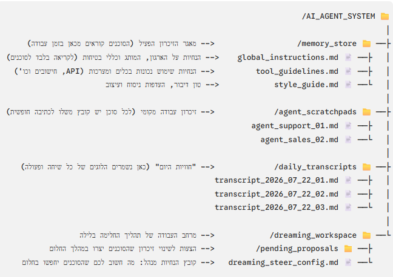

למה קלוד לא זוכר אתכם
בואו נבין קודם מה בכלל קורה מתחת למכסה המנוע של קלוד, לפני שנבנה פתרון
תפתחו שיחה חדשה עם קלוד ותבקשו ממנו לכתוב פוסט. הוא יכתוב טוב - אבל בסגנון גנרי, כי הוא לא יודע איך אתם בדרך כלל כותבים, מי הקהל שלכם, מה כבר ניסיתם ומה לא עבד.
תסבירו לו הכל, הוא יתקן. מחר, בשיחה חדשה, תצטרכו להסביר שוב מההתחלה. קלוד לא "שוכח" אתכם באופן פעיל, הוא פשוט לא נושא איתו שום דבר משיחה לשיחה, אלא אם בניתם לו משהו שכן נשאר.

זיכרון, בהקשר של Claude Code, הוא לא יכולת מובנית של המודל - הוא קבצי טקסט רגילים שאתם כותבים (או שקלוד כותב בשבילכם), שקלוד קורא בתחילת השיחה או תוך כדיה.
במקום שהמודל "יזכור" אתכם, אתם בונים לו ארכיון קבוע שהוא יודע לפתוח בכל פעם מחדש. הפעולה הזו, איך הארכיון בנוי, מה נכנס לתוכו, מתי קלוד פותח כל חלק, יש לה שם רשמי.
אינטליגנציה גולמית של המודל, כמה שתהיה חזקה, היא תנאי הכרחי אבל לא מספיק. מודל חזק שמגיע "מהקופסה" לא מכיר אתכם, את סגנון הכתיבה שלכם, את ההעדפות הספציפיות שלכם - וכל עוד אין לו הקשר, הוא לא יכול לצבור ידע או ללמוד מטעויות לאורך זמן, גם אם הוא "חכם" מאוד ברמה הכללית.
אז איך בעצם בונים זיכרון כזה בפועל? בואו נמשיך.
בונים לקלוד מוח חכם, בלי להעמיס עליו
המטרה שלנו: לתת לקלוד "מוח" שמכיר אתכם - מי אתם, במה אתם עוסקים, איך אתם כותבים, מה ההעדפות שלכם.
הנקודה הראשונה שכדאי לדעת על קלוד קוד: בתחילת כל שיחה, בלי יוצא מן הכלל, הוא קורא אוטומטית קובץ אחד ספציפי, CLAUDE.md, שיושב בתיקיית .claude.

לא לשים את התוכן עצמו ב-CLAUDE.md, אלא קטלוג קצר שמפנה אליו. קטלוג כזה (memory-ref.md) הוא רשימה קצרה בסגנון "יש קובץ על מי אתם, יש קובץ על סגנון הכתיבה, יש קובץ על העיצוב".
הקטלוג נטען בכל שיחה כי הוא זעיר, אבל הקבצים עצמם - המדפים - נפתחים רק כשהמשימה הנוכחית באמת דורשת אותם. לעיקרון הזה יש שם משלו.
נקודה חשובה לגבי המדפים האלה: הם לא מתעדכנים לבד. יש כאן בעצם שני סוגי מדפים, עם שני כללים שונים:
כמו aboutme.md, brandvoice.md, design-system.md, משהו יציב יחסית, יוצרים אותם פעם אחת ורק אם יש שינוי בהעדפות שלנו נשנה אותם.
כמו solutions.md, workwithme.md, inspiration.md, אלו קבצי מסקנות שיתמלאו כתוצאה מתובנות שיתקבלו במהלך העבודה השוטפת שלנו עם קלוד
לפני שנבנה את המדפים בעצמנו, כדאי להכיר עוד משהו חשוב: לקלוד יש כבר מנגנון זיכרון מהסוג הזה, מובנה משלו, שפועל גם בלי שתבנו לו כלום. זה מה שנראה בשלב הבא.
שתי מערכות זיכרון
מה קלוד כבר עושה לבד, ומה בונים בעצמכם
קלוד מתחיל כל שיחה מאפס. הוא לא זוכר מי אתם, מה עשיתם אתמול, או מה החלטתם בשיחה הקודמת. כדי שיזכור דברים בין שיחות, יש ל- Claude Code שתי מערכות זיכרון נפרדות, וכדאי להכיר את ההבדל ביניהן: באחת אתם כותבים, בשנייה קלוד כותב לעצמו.

CLAUDE.md - כללים, הוראות והעדפות שאתם רושמים, וקלוד קורא בתחילת כל שיחה. זה מה שלמדנו לבנות בשלב הקודם.
auto memory, תוך כדי עבודה קלוד רושם הערות שימושיות: פקודות שחזרו, תובנות מדיבוג, העדפות שגילה. הוא מחליט בעצמו מה שווה לזכור, בלי לעצור ולשאול אתכם.
אוטונומיה לסוכן להחליט מתי לקרוא, לכתוב ולעדכן זיכרון בזמן אמת. קבצים אלה נשמרים בנתיב ~/.claude/projects/<project>/memory/.
לא צריך לערוך קבצים ידנית כדי להוסיף ל-auto memory. שתי דרכים מהירות באמצע שיחה:
או מקלידים # בתחילת ההודעה ואחריו ההוראה.
הדרך הפשוטה עובדת, אבל יש לה מחיר: קלוד מחליט לבד מה שווה לשמור, ואתם לא תמיד שולטים בתוכן שנכנס. בשלבים הבאים נבנה גרסה מתקדמת יותר - מדפי זיכרון משלכם, שבהם אתם בוחרים מה יישמר ומאשרים כל פריט לפני שהוא נשמר.
בונים לקלוד מוח חכם שמכיר אתכם
עכשיו כשאתם מכירים את המבנה - הגיע הזמן לבנות אותו בפועל, בשליטה מלאה שלכם
זה לא קורה בהודעה אחת. זה תהליך מובנה של כמה שלבים - אבל אל דאגה, קלוד קוד יבנה הכל עבורכם, אתם רק עונים על שאלון שבו הוא מראיין אתכם. בסוף כל שלב הוא מציג טיוטה וממתין לאישור שלכם לפני שהוא יוצר את הקובץ בפועל.
צרו תיקייה לנכסים שלכם (למשל My_Profile) והכניסו אליה שני סוגי חומרים:
- נכסים גרפיים, לוגו, פלטת צבעים, אייקונים או תמונות שכבר משמשים אתכם בפועל לעיצוב
- תוכן טקסטואלי - טקסטים שכתבתם ואהבתם (פוסטים, מיילים, סיכומי פגישות), לניתוח סגנון הכתיבה שלכם
מעתיקים את הפרומפט המלא למטה לקלוד קוד וצועדים איתו שלב אחר שלב. בסיום כל שלב קלוד מציג טיוטה של הקובץ שיצר, ורק לאחר אישור - יוצר אותו בפועל בתיקייה שלכם. ממשיכים לשלב הבא רק אחרי אישור.
aboutme.md
מי אתם, במה אתם עוסקים, מיהו קהל היעד שלכם, מה מאפיין אתכם.
brandvoice.md
סגנון הכתיבה שלכם: טון, מבנה משפטים, איך אתם פותחים ומסיימים פנייה.
design-system.md
פלטת צבעים, פונטים, סגנון עיצוב מועדף, כולל נתיב לתיקיית הנכסים שלכם.
memory-ref.md
קובץ הקטלוג: מפרט אילו קבצי זיכרון קיימים ומה יש בכל אחד, כולל שלושה קבצי יומן ריקים בשלב זה שיתמלאו בפרק על סקילים.
CLAUDE.md
הקובץ הגלובלי שמפנה לכל הקבצים למעלה, זה שקלוד קורא בתחילת כל שיחה, ב-~/.claude/CLAUDE.md.
סקילים
תהליך עבודה קבוע שקלוד יכול להפעיל שוב ושוב
סקיל הוא תהליך עבודה קבוע שקלוד יכול להפעיל שוב ושוב. במקום להסביר בכל שיחה מחדש כיצד לבצע משימה חוזרת, יוצרים סקיל שנשמר בתוך תיקייה שבמרכזה קובץ SKILL.md.
דוגמאות לסקילים:
- כתיבת הצעת מחיר.
- יצירת דשבורד ספציפי.
- כתיבת דו"ח מותאם אישית.
- בניית לומדה.
- אריזת שיחה ושמירה לזיכרון.
חיסכון בזמן
קלוד זוכר את תהליך העבודה שלכם, ההעדפות, הסטנדרטים, הכללים. אתם חוסכים דקות של הסברים בכל שיחה.
עקביות
כל הפלטים יוצאים באותו סגנון, בכל שיחה, בכל פרויקט. בלי הפתעות ובלי חוסר עקביות.
מקצועיות
סקילים רבים נכתבו על ידי מומחים בתחומם, מעצבים, מפתחים, כותבי תוכן. אתם נהנים מהניסיון שלהם בלי לשלם על ייעוץ.
שימוש חוזר
מתקינים פעם אחת, והסקיל זמין תמיד, בכל פרויקט ובכל שיחה. אין צורך לעשות שום דבר נוסף.
סקילים נשמרים בתיקייה ספציפית במחשב שלכם. Claude Code קורא מתוכה אוטומטית בכל שיחה.
.claude/skills
כל האפשרויות מתחילות מאותה נקודה בממשק, Customize → Skills → +, ומשם הדרך מתפצלת לפי מה שאתם צריכים.
בתפריט מופיעות שתי דרכי בנייה: אפשר לתת לקלוד לנהל איתכם ראיון קצר ולהרכיב את הסקיל בעצמו דרך Create with Claude, או לכתוב את קובץ ההוראות בעצמכם ידנית דרך Write skill instructions. הרצף למעלה מראה איך זה נראה בפועל.
כשקובץ הסקיל כבר נמצא אצלכם במחשב, בין אם קיבלתם אותו או הורדתם אותו כ-ZIP, מעלים אותו ישירות דרך Upload a skill (שלב 5 ברצף למעלה). זו גם הזדמנות טובה להציץ בתוכן לפני שמתקינים אותו בפועל.
אם עוד לא הורדתם שום דבר, התפריט Browse skills מאפשר להתקין בלחיצה אחת סקילים רשמיים שכבר קיימים בתוך הממשק, בלי לצאת ממנו. זה עובד רק לסקילים שכבר מופיעים שם.
יש גם אפשרות להביא סקיל מספרייה שאינה חלק מהממשק: כל סקיל כזה מגיע עם שורת פקודה קצרה משלו, שמעתיקים מדף הסקיל המקורי ומריצים אצלכם. בדרך כלל היא נראית בערך כך:
פותחים שיחה חדשה ב-Claude Code וכותבים את הסימן /. תיפתח רשימה של כל הסקילים המותקנים אצלכם.
עד כאן ההיכרות הכללית עם סקילים. עכשיו, ליישום הספציפי שלנו: הסקיל שישמור בשבילכם על קבצי היומן מהשלב הקודם.
שלושת קבצי היומן (workwithme.md, solutions.md, inspiration.md) וה-memory-ref.md כבר קיימים אצלכם משלב 4, ריקים, מוכנים אבל לא בשימוש. הסקיל שנבנה כאן לא יוצר אותם מחדש, רק כותב לתוכם. הפרומפט להעתקה:
עכשיו יש לכם מערכת שלמה: קובץ קבוע, קטלוג, מדפי זהות, ומדפי יומן שמתמלאים כשאתם מבקשים זאת ובשליטתכם המלאה.
מתי בעצם מפעילים את wrap
התשובה קשורה למשהו שכדאי להכיר על איך שיחה עם קלוד עובדת מבפנים
לכל שיחה יש חלון הקשר (context window), נפח המידע שקלוד "מחזיק בראש" באותו רגע. בכל הודעה שאתם שולחים, קלוד לא נזכר במה שהיה קודם, הוא קורא מחדש את כל השיחה מההתחלה.
ככל שהשיחה מתארכת, שני דברים קורים במקביל: כל הודעה עולה יותר, וברגע מסוים קלוד מתחיל לאבד חדות לגבי מה שנאמר בתחילת השיחה, פשוט כי יש יותר מדי לקרוא.
מכווץ את היסטוריית השיחה לתקציר ומפנה מקום מיידית, בלי לפתוח שיחה חדשה.
עובד הפוך: אתם רואים בדיוק מה מוצע לשמור, ומאשרים פריט-פריט.
אחרי שמפעילים wrap ומאשרים מה נכנס לזיכרון, נשאר עוד צעד קטן: מבקשים מקלוד לנסח פרומפט המשך, סיכום קצר של איפה בדיוק המשימה עומדת ומה נשאר לעשות. מעתיקים אותו, פותחים שיחה חדשה, ומדביקים אותו כהודעה הראשונה. כך השיחה החדשה ממשיכה בדיוק מהנקודה שבה עצרתם, עם חלון הקשר פנוי לגמרי.
תכנון מחוץ ל-Claude Code
העבירו את העכבר ←שאלות צד עם /btw
העבירו את העכבר ←סוכנים למשימות כבדות
העבירו את העכבר ←וכשזה גדל לארגון שלם
כל מה שבנינו עד כה הוא בקנה מידה אישי, מה קורה כשזה עובר לאלפי עובדים?
כל מה שבנינו עד כה הוא בקנה מידה אישי - אדם אחד, קבצים משלו, ואישור שלו לפני כל שינוי. כשאותו רעיון עובר לארגון עם עשרות או מאות עובדים שמריצים אלפי שיחות עם קלוד במקביל, בונים תשתית שלמה: מאגר זיכרון פיזי משותף, צי סוכנים בשלושה תפקידים, ותהליך "חלימה" אסינכרוני שרץ ברקע ומשפר את הזיכרון בעצמו, בלי להאט את קצב העבודה במהלך היום.

זה מבנה התיקיות והקבצים שיש לפתוח במחשב, ה"מוח" המשותף שכל הסוכנים בארגון קוראים וכותבים אליו. בתמונה מופיעות גם דוגמאות לקבצים שנשארים ריקים בהתחלה, ויתמלאו בהמשך על ידי הסוכנים עצמם תוך כדי עבודה ובתהליך החלימה.
כדי לבנות מערכת כזו, לא מסתפקים בסוכן בודד. מקימים "צי סוכנים" המורכב משלושה תפקידים עיקריים שפועלים בתיאום מושלם, וכל אחד מהם מקבל פרומפט מערכת קבוע משלו:
אלו הסוכנים שנותנים שירות לעובדי הארגון או ללקוחות הקצה - למשל סוכן כתיבת תוכן, סוכן תמיכה טכנית, סוכן ניתוח נתונים. עשרות או מאות סוכנים רצים במקביל, בהתאם לצורכי הארגון. הם מבצעים את עבודתם השוטפת, קוראים הנחיות ממאגר הזיכרון הכללי, וכותבים זיכרונות זמניים ונקודתיים לטיוטות האישיות שלהם.
סוכנים ייעודיים שאינם באים במגע עם המשתמשים, ומופעלים אסינכרונית מחוץ לשעות הפעילות. מערכת הניהול מפעילה "צי" של כמה סוכנים כאלה במקביל, כדי לחלק את עומס הניתוח של שיחות היום החולף. כל סוכן מקבל קבוצת תמלילי שיחות ומטא-דאטה של ביצועי כלים מהיממה האחרונה, משווה אותם לזיכרון הקיים, ומחלץ דפוסי כשלים, טעויות חוזרות או פערי ידע.
סוכן מנהל יחיד, שמרכז את הדוחות מכל "סוכני החלום", מזהה אילו דפוסים הם רוחביים ומובהקים מספיק כדי להצדיק שינוי אמיתי בזיכרון הארגוני, ומגבש הצעת עדכון סופית ומסודרת המוגשת לאישור של מנהל אנושי.
מערכת החלימה פועלת כגלגל שיניים אסינכרוני שרץ ברקע (למשל, בכל לילה ב-02:00) מחוץ לשעות העבודה הפעילות, ובמשאבי מחשוב וטוקנים נפרדים, כדי לא להפריע למהירות העבודה של הסוכנים במהלך היום.
בכל לילה המערכת אוספת את כל תמלילי השיחות של הסוכנים מאותו יום, כולל המטא-דאטה של קריאות הכלים: אילו כלים הופעלו, אילו פרמטרים נשלחו, ומה היו שגיאות המערכת.
מנוע הניהול (האורקסטרטור) מחלק את התמלילים בין סוכני הניתוח האסינכרוניים ומפעיל אותם במקביל.
סוכני הניתוח מדווחים למנוע הניהול על כשלים. הוא בודק אם הבעיה שיטתית (למשל: "הרבה סוכנים השתמשו ברדיאנים במקום במעלות") ומכין הצעת עדכון לקובץ הזיכרון המתאים.
בבוקר, מנהל המערכת נכנס למסך בקרה פשוט המציג את ההמלצות, ולוחץ על כפתור "אשר" (Accept) או "דחה" (Reject).
הצעות שאושרו נכתבות ישירות לתוך קובצי ה-Markdown הרלוונטיים. בשיחה הבאה שלהם, הסוכנים האופרטיביים כבר קוראים את הזיכרון המעודכן ועובדים בצורה נכונה ומדויקת.
כדי שהתשתית לא תקרוס וכדי למנוע מהסוכנים לשבש זה את עבודתו של זה, המעטפת הטכנולוגית שמריצה אותם חייבת ליישם שלושה כללים דטרמיניסטיים קבועים:
המערכת שבניתם בלומדה הזו היא בדיוק אותם עקרונות, מותאמים לגודל הנכון: קובץ קבוע, קטלוג, מדפים ממוינים, וספרן שפועל רק כשקוראים לו ובאישורכם. הפלייבוק הארגוני הזה, עם צי הסוכנים, מאגר הזיכרון והחלימה, הוא הצעד הבא כשתרצו להרחיב את זה לצוות שלם.
צ'קליסט סיכום הלומדה
סמנו כל פריט כשהוא ברור לכם, וודאו שהמוח החכם באמת מוכן